NCERT Solutions For Class 11 Maths Chapter 2 Relations and Functions
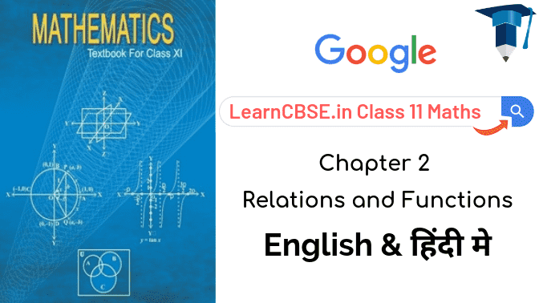
In NCERT Solutions for Class 11 maths chapter 2 relations and functions, we learn about ordered pair, cartesian product of sets, relations, representation of a relation, function as a special kind of relation, function as a correspondence, equal functions, real functions, domain of real functions, some standard real functions and their graphs, operations on real functions.
- Relations and Functions Class 11 Ex 2.1
- Relations and Functions Class 11 Ex 2.2
- Relations and Functions Class 11 Ex 2.3
- Relations and Functions Class 11 Miscellaneous Exercise
- संबंध एवं फलन प्रश्नावली 2.1 का हल हिंदी में
- संबंध एवं फलन प्रश्नावली 2.2 का हल हिंदी में
- संबंध एवं फलन प्रश्नावली 2.3 का हल हिंदी में
- संबंध एवं फलन विविध प्रश्नावली का हल हिंदी में
- NCERT Exemplar Class 11 Maths Chapter 2 Relations and Functions
- Relations and Functions Class 11 Notes
- Relations and Functions Formulas
- RD Sharma Class 11 Solutions Chapter 2 Relations
| Section Name | Topic Name |
| 2 | Relations and Functions |
| 2.1 | Introduction |
| 2.2 | Cartesian Product of Sets |
| 2.3 | Relations |
| 2.4 | Functions |
| 2.5 | Summary |
Class 11 Maths NCERT Solutions Chapter 2 Ex 2.1
Ex 2.1 Class 11 Maths Question-1
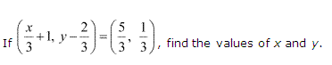
Ans.
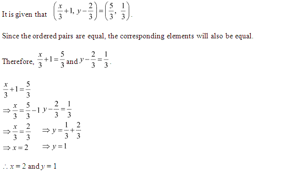
Ex 2.1 Class 11 Maths Question-2
Ans.
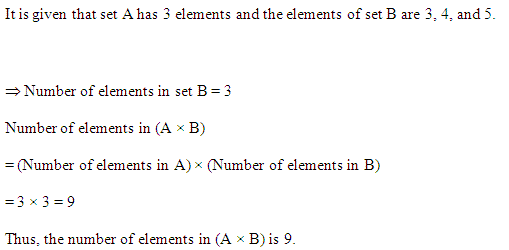
More Resources for CBSE Class 11
- NCERT Solutions
- NCERT Solutions Class 11 Maths
- NCERT Solutions Class 11 Physics
- NCERT Solutions Class 11 Chemistry
- NCERT Solutions Class 11 Biology
- NCERT Solutions Class 11 Hindi
- NCERT Solutions Class 11 English
- NCERT Solutions Class 11 Business Studies
- NCERT Solutions Class 11 Accountancy
- NCERT Solutions Class 11 Psychology
- NCERT Solutions Class 11 Entrepreneurship
- NCERT Solutions Class 11 Indian Economic Development
- NCERT Solutions Class 11 Computer Science
Ex 2.1 Class 11 Maths Question-3
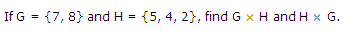
Ans.
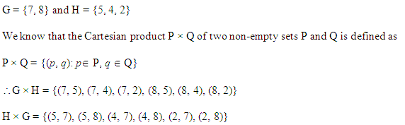
Ex 2.1 Class 11 Maths Question-4
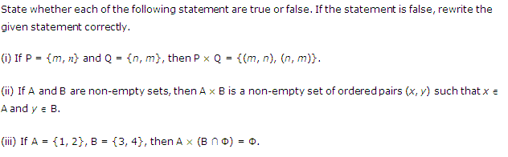
Ans.
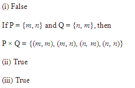
Ex 2.1 Class 11 Maths Question-5
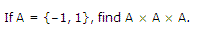
Ans.
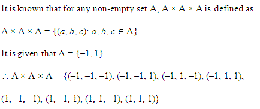
Ex 2.1 Class 11 Maths Question-6
Ans.
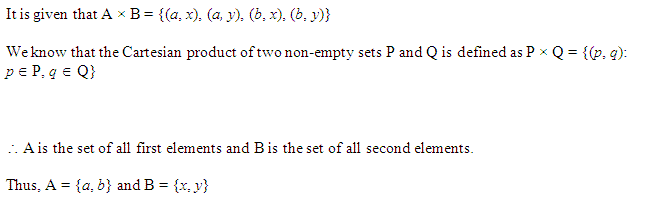
Ex 2.1 Class 11 Maths Question-7
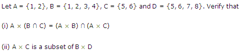
Ans.
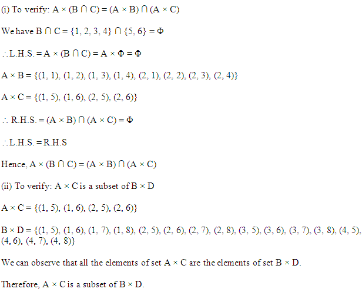
Ex 2.1 Class 11 Maths Question-8
Ans.
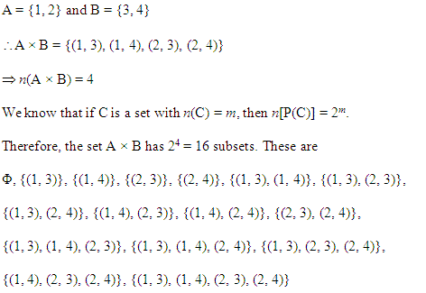
Ex 2.1 Class 11 Maths Question-9
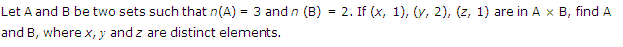
Ans.
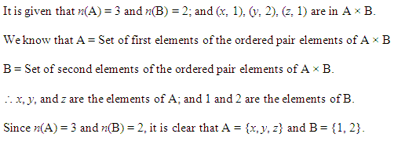
Ex 2.1 Class 11 Maths Question-10
Ans.
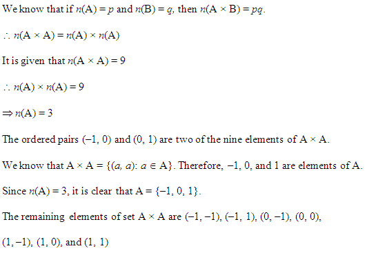
NCERT Solutions for Class 11 Maths Chapter 2 Ex 2.2
Ex 2.2 Class 11 Maths Question-1
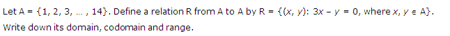
Ans.
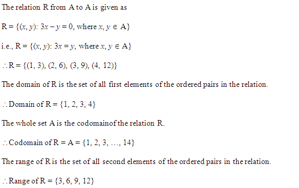
Ex 2.2 Class 11 Maths Question-2
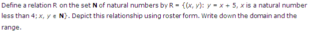
Ans.
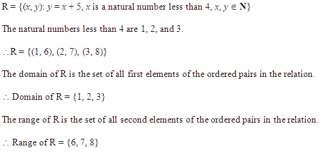
Ex 2.2 Class 11 Maths Question-3
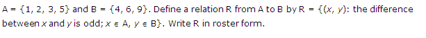
Ans.
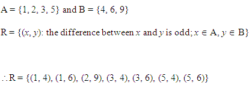
Ex 2.2 Class 11 Maths Question-4
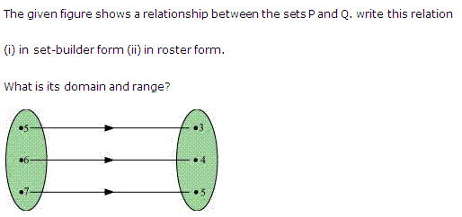
Ans.
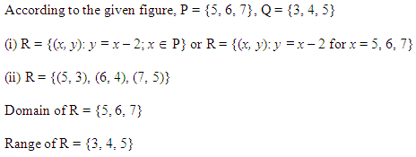
Ex 2.2 Class 11 Maths Question-5
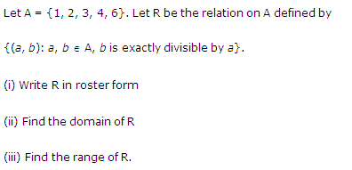
Ans.
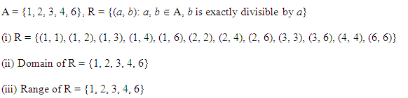
Ex 2.2 Class 11 Maths Question-6
Ans.
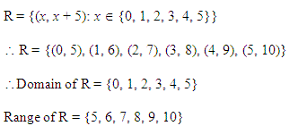
Ex 2.2 Class 11 Maths Question-7
Ans.
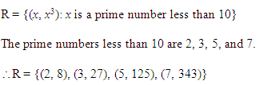
Ex 2.2 Class 11 Maths Question-8
Ans.
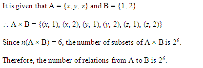
Ex 2.2 Class 11 Maths Question-9
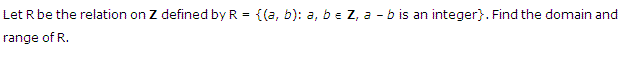
Ans.
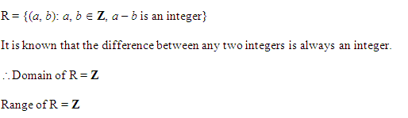
Class 11 Maths NCERT Solutions Chapter 2 Ex 2.3
Ex 2.3 Class 11 Maths Question-1
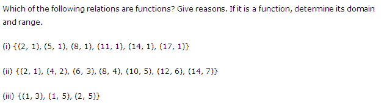
Ans.
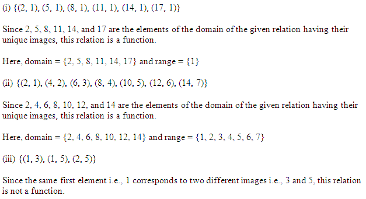
Ex 2.3 Class 11 Maths Question-2
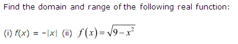
Ans.
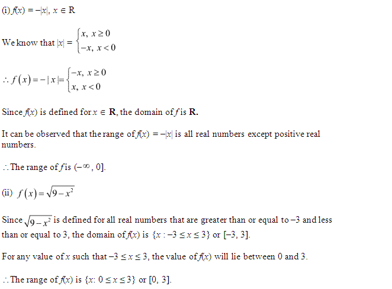
Ex 2.3 Class 11 Maths Question-3
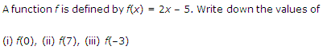
Ans.
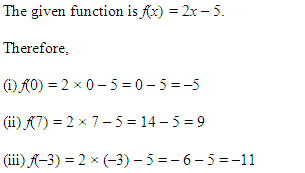
Ex 2.3 Class 11 Maths Question-4
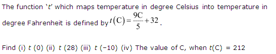
Ans.
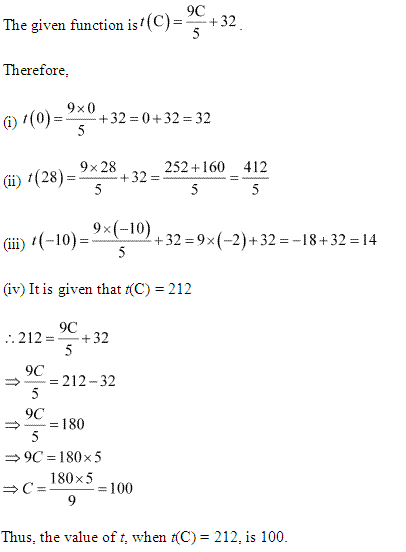
Ex 2.3 Class 11 Maths Question-5
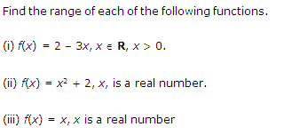
Ans.
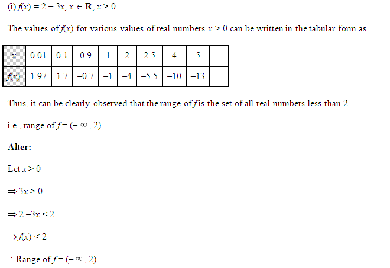
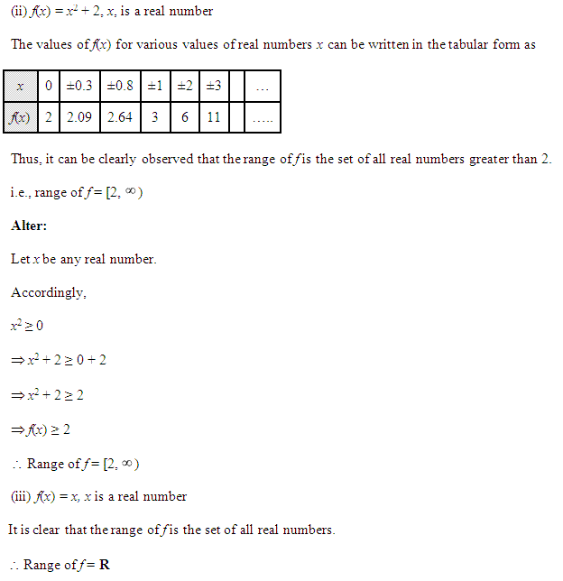
Class 11 Maths NCERT Miscellaneous Solutions Chapter 2
Miscelleneous Exercise Class 11 Maths Question-1
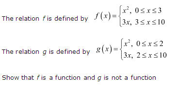
Ans.
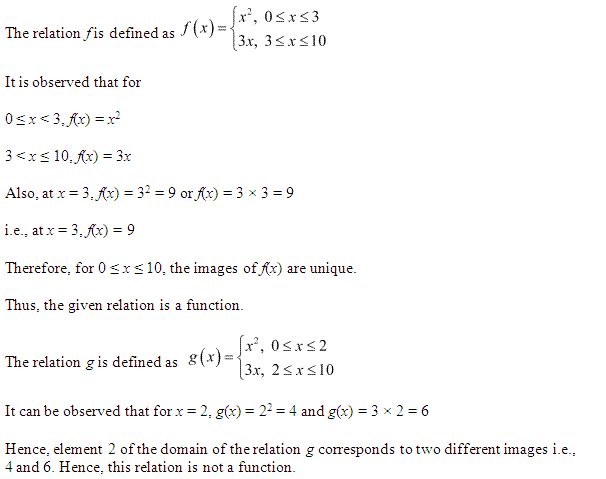
Miscelleneous Exercise Class 11 Maths Question-2
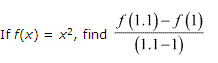
Ans.
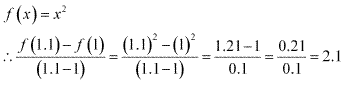
Miscelleneous Exercise Class 11 Maths Question-3

Ans.
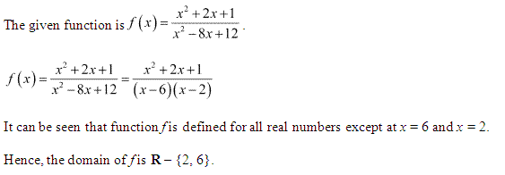
Miscelleneous Exercise Class 11 Maths Question-4
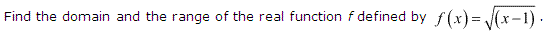
Ans.
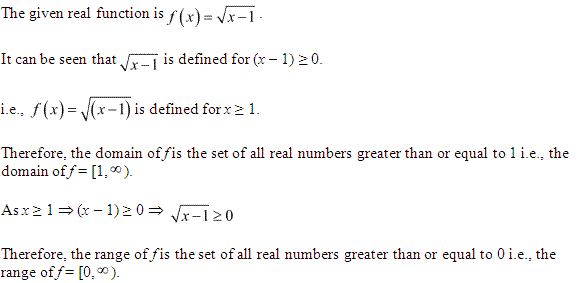
Miscelleneous Exercise Class 11 Maths Question-5
Ans.
Miscelleneous Exercise Class 11 Maths Question-6
Ans.
Miscelleneous Exercise Class 11 Maths Question-7
Ans.
Miscelleneous Exercise Class 11 Maths Question-8
Ans.
Miscelleneous Exercise Class 11 Maths Question-9
Ans.
Miscelleneous Exercise Class 11 Maths Question-10
Ans.
Miscelleneous Exercise Class 11 Maths Question-11
Ans.
Miscelleneous Exercise Class 11 Maths Question-12
Ans.
संबंध एवं फलन प्रश्नावली 2.1 का हल हिंदी में
प्रश्न 2.
यदि समुच्चय A में 3 अवयव हैं तथा समुच्चय B = {3, 4, 5}, तो A x B में अवयवों की संख्या ज्ञात कीजिए।
हल:
समुच्चयं A में 3 अवयव है और समुच्चय B में भी 3 अवयव हैं।
A x B में अंवयवों की संख्या = 3 x 3 = 9.
प्रश्न 3.
यदि G = {7, 8} और H = {5, 4, 2}, तो G x H तथा H x G ज्ञात कीजिए।
हल:
G = {7, 8}, H = {5, 4, 2} G x H = {7, 8} x {5, 4, 2}
= {(7, 5), (7, 4), (7, 2), (8, 5), (8, 4), (8, 2)}
तथा
H x G = {5, 4, 2} x {7, 8} = {(5, 7), (5, 8), (4,7), (4, 8), (2, 7), (2, 8)}
प्रश्न 4.
बताइए कि निम्नलिखित कथनों में से प्रत्येक सत्य है या असत्य है। यदि कथन असत्य है, तो दिए गए कथन को सही बनाकर लिखिए।
(i) यदि P= {m, n} और 2 = {n, m} तो P x Q = {(m, n), (n, m)}.
(ii) यदि A और B अरिक्त समुच्चय हैं, तो A x B क्रमित युग्मों (x, y) का एक अरिक्त समुच्यय है इस प्रकार कि x ∈ A तथा y ∈ B.
(iii) यदि A = {1, 2}, B = {3, 4}, तो A x (B ∩ Φ) = Φ
हल:
(i) दिया है :
P = {m, n}
Q = {n, m }
P x Q = {m, n} x {n, m} = {(m, n), (m, m), (n, n), (n, m)}
अतः दिया गया P x Q = {(m, n), (n, m),} कथन असत्य है।
(ii) सत्य है क्योंकि A x B क्रमित युग्म (x, y) का अरिक्त समुच्चय है जिसमें
x ∈ A तथा y ∈ B.
(iii) सत्य है क्योंकि B ∈ Φ = Φ
A x (B ⊂ Φ ) = A x Φ = Φ.
प्रश्न 5.
यदि A= {-1, 1}, तो A x A x A ज्ञात कीजिए।
हल:
A = {(-1, 1)}
A x A = {-1, 1} x {-1, 1} = {(-1,-1), (-1, 1), (1,- 1), (1,1)}
A x A x A = {-1, 1} x {(-1, – 1), (-1, 1), (1, -1), (1, 1)} = {(-1, -1, -1), (-1, -1, 1), (-1, 1, -1), (-1, 1, 1), (1, 1, -1), (1, -1, 1), (1, 1, -1), (1, 1, 1)}.
प्रश्न 6.
यदि A x B = {(a, x), (a, y), (b, x), (b, y)} तो A तथा B ज्ञात कीजिए।
हल:
A x B = {(a, x), (a, y), (b, x), (b, y)} = {a, b} x {x, y}
अतः A = {a, b}, B = {x, y}.
प्रश्न 7.
मान लीजिए कि A = {1, 2}, B = {1, 2, 3, 4}, C = {5, 6} तथा D = {5, 6, 7, 8} सत्यापित कीजिए कि
(i) A x (B ∩ C)= (A x B) ∩ (A x C)
(ii) A x C, B x D का एक उपसमुच्चय है।
हल:
दिया है। A = {1, 2}, B = {1, 2, 3, 4}, C = {5, 6}, D = {5, 6, 7, 8}
बायाँ पक्ष = A x (B ∩ C) {1, 2} x {{1, 2, 3, 4} ∩ {5, 6}) = {1, 2} x Φ = Φ
दायाँ पक्ष = (A x B) ∩ (A x C)
= [{1, 2} x {1, 2, 3, 4}] ∩ [{1, 2} { {5, 6}]
= {(1, 1), (1, 2), (1, 3), (1, 4), (2, 1), (2, 2), (2, 3), (2, 4)} {(1, 5), (1, 6), (2, 5), (2, 6)}
= Φ
अतः बायाँ पक्ष = दायाँ पक्ष
A x C = {1, 2} x {5, 6} = {{1, 5), (1, 6), (2, 5), (2, 6)}
B x D = {1, 2, 3, 4} x {5, 6, 7, 8}
= {(1,5), (1,6), (1, 7), (1, 8), (2,5), (2, 6), (2, 7), (2, 8), (3, 5), (3, 6), (3, 7), (3, 8), (4, 5), (4, 6), (4, 7), (4, 8)}
हम पाते हैं कि A x C के सभी अवयव समुच्चय B x D में स्थित हैं।
अतः A x C ⊂ B x D.
प्रश्न 8.
मान लीजिए कि A = {1, 2} और B = {3, 4}. A x B लिखिए। A x B के कितने उपसमुन्। होंगें ? उनकी सूची बनाइए।
हल:
A x B = {1, 2} x {3, 4} = {(1, 3), (1, 4), (2, 3), (2, 4)}
A x B के उपसमुच्चयों की संख्या = 24 = 16
A x B के उपसमुच्चयों के अवयव = 6, {(1, 3)}, {(1,4)}, {(2, 3)}, {(2, 4)}, {(1, 3), (1,4)}, {(1, 3)
(2, 3)},{(1, 3), (2, 4)}, {(1, 4), (2, 3)}, {(1, 4), (2,4)}, {(2, 3), (2, 4)}, {(1, 3), (1, 4), (2, 3)}, {(1, 3), (1, 4), (2, 4)}, {(1, 3), (2,3), (2, 4)}, {(1, 4), (2, 3), (2, 4)}, {(1, 3), (1, 4), (2, 3), (2, 4)}.
प्रश्न 9.
मान लीजिए कि A और B दो समुच्चय हैं, जहाँ n(A) = 3 और n(B) = 2. यदि (x, 1), (y, 2), (z, 1), A x B में हैं, तो A और B को ज्ञात कीजिए, जहाँ x, y और z भिन्न-भिन्न अवयव हैं।
हल:
अवयव x, y, z ∈ A अर्थात् A = {x, y, z}
1, 2 ∈ B अर्थात् B = {1, 2}.
प्रश्न 10.
कार्तीय गुणन AXA में 9 अवयव हैं जिनमें (-1, 0) तथा (0, 1) भी हैं। समुच्चय Aज्ञात कीजिए तथा A x A के शेष अवयव भी ज्ञात कीजिए।
हल:
(-1, 0) ∈ A x A ⇒ -1 ∈ A और 0 ∈ A ⇒ -1, 0 ∈ A और
(0, 1) ∈ A ⇒ 0 ∈ A तथा 1 ∈ A
⇒ 0, 1 ∈ A
-1, 0, 1 ∈ A
A = {-1, 0, 1}
A x A = {-1, 0, 1} x {-1, 0, 1}
= {(-1, -1), (-1, 0), (-1, 1), (0, -1), (0, 0), (0, 1), (1,-1), (1,0), (1,1)}
जिसमें (-1, 0), (0, 1) सम्मिलित है।
अत: A x A के शेष अवयव = (-1, -1), (-1, 1), (0, -1), (0, 0), (1,- 1), (1, 0), (1, 1).
Exercise 2.1
Q.1: If (\(\\ \frac { a }{ 3 } +1\),\(b- \frac { 2 }{ 3 } \)) = (\(\\ \frac { 5 }{ 3 } \),\(\\ \frac { 1 }{ 3 } \)), what is the value of a and b?
Q:2. If the set X has 4 elements and the set Y = {2, 3, 4, 5}, then find the number of elements in X × Y
Q.3: If A = {8, 9} and B = {4, 5, 2}, what is the value of A × B and B × A?
Q.4: State whether the given statements are True or False. If the statement is false, write that statement correctly.
(i). If X = {a, b} and Y = {b, a}, then X × Y = {(a, b), (b, a)}
(ii). If P and Q are non – empty sets, then P × Q is a non – empty set of ordered pairs (a, b) such that x ∈ P and b ∈ Q.
(iii). If M = {2, 3}, N = {4, 5}, then M × (N ∩Ø ) = Ø.
Q.5: If M = {-2, 2}, then find M × M × M.
Q.6: If X × Y = {(a, m), (a, n), (b, m), (b, n)}. Find X and Y.
Q.7: Let P = {2, 3}, Q = {2, 3, 4, 5}, R = {6, 7} and S = {6, 7, 8, 9}. Verify the following:
(i). P×(Q∩R) = (P×Q)∩(P×R)
(ii). P × R is a subset of Q × S
Q.8: Let P = {2, 3} and Q = {4, 5}. Find P × Q and then find how many subsets will P × Q have? List them.
Q.9: Let M and N be two sets where n (M) = 3 and n (N) = 2. If (a, 1), (b, 2), (c, 1) are in M × N, find M and N, where a, b and c are different elements.
Q.10: The Cartesian product Z × Z has 9 elements among which are found (-2, 0) and (0, 2). Find the set Z and also the remaining elements of Z × Z.
Exercise 2.2
Q.1: Let X = {1, 2, 3, 4, . . . . . 14}. Define a relation Z from X to X by Z= {(a, b): 3a – b = 0, where a, b ∈ X}. Find its co – domain, domain and range.
Q.2: Define a relation Z on the set N of natural no. by Z = {(a, b): b = a + 5, a is a natural no less than 4; a, b ∈ N}. Give this relationship in the roaster form. Find the domain and the range.
Q.3: M = {1, 2, 3, 5} and N = {4, 6, 9}. Define a relation Z from M to N by Z = {(a, b): the difference between a and b is odd; a ∈ M, b ∈ N}. Find Z in roster form.
The figure given below shows a relationship between the sets A and B. Find the following relation:
(i) In set-builder form
(ii) In roster form.
What is its range and domain?
Q.5: Let X = {1, 2, 3, 4, 6}. Let Z be the relation on X defined by {(p, q): p, q ∈ X, q is divisible by p}.
(i) Write Z in the roster form
(ii) Find domain of Z
(iii) Find range of Z
Q.6: Find the range and domain of the relation Z defined by Z = {(a, a + 5): a ∈ {0, 1, 2, 3, 4, 5}}.
Q.7: Find the relation Z = {(a, a³): a is a prime number less than 10} in the roster form.
Q.8: Let X = {a, b, c} and Y = {11, 12}. Find the no. of relations from X to Y.
Q.9: Let Z be the relation on P defined by Z = {(x, y): x, y ∈ P, x – y is an integer}. Find the range and domain of Z.
Exercise 2.3
Q.1: Which of the given relations are functions? Answer with reason. If it is a function, find its range and domain.
(i) {(12, 11), (15, 11), (18, 11), (1, 11), (4, 11), (7, 11)}
(ii) {(12, 11), (14, 12), (16, 13), (18, 14), (0, 15), (2, 16), (4, 17)}
(iii) {(11, 13), (11, 15), (12, 15)}
Q.2: Find the range and domain of the given real function:
(i) f(y) = -|y|
(ii) f(y) = √9–y²
Q.3: A function f is f(y) = 3y – 6. Find the values of the following:
(i) f(1)
(ii) f(8)
(iii) f(-2)
Q.4: The function ‘f’ which shows temperature in degree Celsius into temperature in degree Fahrenheit is expressed as: \(\\ \frac { 9C }{ 5 } +32\).
Find for the following values:
(i) f(0)
(ii) f(28)
(iii) f(-10)
(iv) The value of C, when f(C) = 212
Q.5: Calculate range of the given functions:
(i) f(y) = 2 – 3y, y ∈ R, y > 0.
(ii) f(y) = y2+2, is a real no.
(iii) f(y) = y, y is a real no.
Miscellaneous Exercise
Q-1: The relation ‘m’ is defined by:
m (y) = y2, 0≤y≤5
= 5y, 5≤y≤30
The relation ‘n’ is defined by
n (y) = y2, 0≤y≤4
= 5y, 4≤y≤30
Now, prove that ‘m’ is a function and ‘n’ is not a function.
Q-2: If g(y) = y2 then, Find \(\frac { g(1.2)-g(1) }{ (1.2-1) } \)
Find the domain for the function given below:
\(g(y)=\frac { { y }^{ 2 }-2y+1 }{ { y }^{ 2 }-9y+20 }\)
Q-4: Find the range and domain of the function given below:
g(y)=√(y–5)
Q-5: Find the range and domain of the function: g(y) = |y – 4|
Q-6: A function from ‘R into R’ is given below. Find the range of ‘g’.
\(g=\left[ \left( y,\frac { { y }^{ 2 } }{ 1+{ y }^{ 2 } } \right) ;y\in R \right] \)
Q-7: Assume that function ‘m’ and ‘n’ is defined from: R→R.
m (y) = y + 2, n(y) = 3y – 2
Find m + n, m – n and \(\\ \frac { m }{ n } \)
Q-8: Let g = {(1, 1), (2, 3), (0, -1), (-1, -3)} be a function from ‘Z to Z’ defined by g(y) = uy + v, for some integers u,v. Find u,v.
Q-9: Let ‘f’ be a relation from ‘N to N’ defined by f = {(x,y): x,yϵN and x = y2}. Find out which of the following is true and which one is false.
1.(x,y)ϵf,(y,z)ϵf⇒(x,z)ϵf.
2.(x,x)ϵf,forallxϵN
3.(x,y)ϵf⇒(y,x)ϵf
Also justify your answer.
Q-10: Assume U = {1, 2, 3, 4}, V = {1, 5, 9, 11, 15, 16} and f = {(1, 5), (2,9), (3,1), (4, 5), (2, 11)}. Find out which of the following is true and which one is false.
(1). ‘f’ is a function from U to V.
(2). ‘f’ is a relation from U to V.
Justify your answer.
Q-11: Assume ‘g’ be the subset of ‘Z to Z’ defined by f = {(xy, x + y): x,yϵZ}. Is ‘g’ a function from ‘Z to Z’, also justify your answer.
Q-12: Assume ‘X’ = {5,7,9, 10, 11, 12, 13} and let ‘g’: X→N be defined by g(n) = The highest prime factor of ‘n’. Find the range of ‘g’.
NCERT Solutions for Class 11 Maths All Chapters
- Chapter 1 Sets
- Chapter 2 Relations and Functions
- Chapter 3 Trigonometric Functions
- Chapter 4 Principle of Mathematical Induction
- Chapter 5 Complex Numbers and Quadratic Equations
- Chapter 6 Linear Inequalities
- Chapter 7 Permutation and Combinations
- Chapter 8 Binomial Theorem
- Chapter 9 Sequences and Series
- Chapter 10 Straight Lines
- Chapter 11 Conic Sections
- Chapter 12 Introduction to Three Dimensional Geometry
- Chapter 13 Limits and Derivatives
- Chapter 14 Mathematical Reasoning
- Chapter 15 Statistics
- Chapter 16 Probability